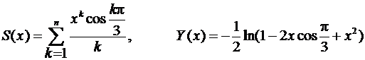

ЛАБОРАТОРНЫЕ РАБОТЫ 1 и 2
ПРОГРАММИРОВАНИЕ АРИФМЕТИЧЕСКОГО СОПРОЦЕССОРА
ТЕОРЕТИЧЕСКИЕ СВЕДЕНИЯ
Сопроцессорные конфигурации
Использование сопроцессора позволяет значительно ускорить работу
программ, выполняющих расчеты с высокой точностью, тригонометрические
вычисления и обработку информации, которая должна быть представлена в виде
действительных чисел. Сопроцессор подключается к системной шине параллельно с
центральным процессором (CPU) и может работать только совместно с ним. Все
команды попадают в оба процессора, а выполняет каждый свои. Сопроцессор не
имеет своей программы и не может осуществлять выборку команд и данных. Это
делает центральный процессор. Сопроцессор перехватывает с шины данные и после
этого реализует конкретные действия по выполнению команды. Два процессора
работают параллельно, что повышает эффективность системы. Но возникают ситуации, когда их работа требует
синхронизации (из-за разницы во времени выполнения команд).
Синхронизация по командам. Когда центральный процессор выбирает для выполнения
команду FPU, последний может быть занят выполнением предыдущей команды. Поэтому
перед каждой командой сопроцессора в программе должна стоять специальная
команда (wait), которая только проверяет текущее состояние FPU и, если он
занят, переводит центральный процессор в состояние ожидания. Соответствующую
команду в программу может вводить либо ассемблер, либо компилятор языка без
указаний программиста.
Синхронизация по данным. Если выполняемая в FPU команда записывает операнд в память перед
последующей командой СРU, которая обращается к этой ячейке памяти, требуется
команда проверки состояния FPU. Если данные еще не были записаны, СPU должен
переходить в состояние ожидания. Автоматически учесть такие ситуации довольно
сложно, поэтому вводить команды, которые проверяют состояние сопроцессора и при
необходимости заставляют центральный процессор ожидать, должен программист.
Программная модель сопроцессора
В программную модель любого процессора включаются только те
регистры, которые доступны программисту на уровне машинных команд. Основу
программной модели FPU образует регистровый стек из восьми 80-битных регистров
R0-R7. В них хранятся числа в вещественном формате. В любой момент времени
3-битное поле ST в слове состояния
определяет регистр, являющийся текущей вершиной стека и обозначаемый ST(0). При
занесении в стек (push) осуществляется декремент поля ST и загружаются данные в новую вершину
стека. При извлечении из стека (pop) в получатель, которым чаще всего является
память, передается содержимое вершины стека, а затем инкрементируется поле ST .
В организации регистрового
стека FPU есть отличия от классического стека.
1. Стек имеет кольцевую структуру. Контроль за
использованием стека должен осуществлять программист. Максимальное число
занесений без промежуточных извлечений равно 8.
2. В командах FPU допускается явное или
неявное обращение к регистрам с модификацией или без поля ST. Например, команда fsqrt замещает число из вершины стека значением
корня из него. В бинарных операциях допускается явное указание регистров.
Адресация осуществляется относительно текущей вершины стека и обозначение ST
(i) 0<i<7 , считая от
вершины.
3. Не все стековые команды автоматически
модифицируют указатель вершины стека.
С каждым регистром стека
ассоциируется 2-битный тег (признак), совокупность которых образует слово
тегов. Тег регистра R0 находиться в младших битах, R7 – в старших. Тег
фиксирует наличие в регистре действительного числа (код 00), истинного нуля
(код 01), ненормализованного или бесконечности (код 10) и отсутствие данных
(код 11). Наличие тегов позволяет FPU быстрее обнаруживать особые случаи
(попытка загрузить в непустой регистр, попытка извлечь из пустого) и
обрабатывать данные.
Остальными регистрами FPU
являются регистр управления, регистр состояния, два регистра состояния команды
и два регистра указателя данных. Длина их всех 16 бит.
Форматы численных данных
Арифметический FPU К1810ВМ87 оперирует с семью
форматами численных данных, образующих три класса: двоичные целые, упакованные
десятичные целые и вещественные числа. Во всех форматах старший (левый) бит
отведен для знака.
Форматы различаются длиной, следовательно, диапазоном допустимых
чисел, способом представления (упакованный и неупакованный формат), способом
кодировки(прямой и дополнительный код).
Двоичные целые числа. Три формата целых двоичных
(целое слово (16 бит), короткое целое (32 бита), длинное целое (64 бита))
отличаются длиной, следовательно, диапазоном чисел. Только в этих форматах
применяется стандартный дополнительный код. 0 имеет единственное кодирование.
Наибольшее положительное число кодируеться как 011…1, а Наибольшее по модулю отрицательное как
100..0.
Упакованные
десятичные целые. Числа представлены в прямом
коде и упакованном формате, т.е. в байте содержится две десятичные цифры в коде
8421. Старший бит левого байта – знак, остальные игнорируются, но при записи в
них помещаются нули. Но надо учитывать,
что при наличии в тетраде запрещающих комбинаций 1010 – 1111 результат операции
не определен. Т.е. сопроцессор не контролирует правильность результата.
Вещественные числа. Различают короткие вещественные (КВ)(мантиса
– 24 бита, порядок – 8 бит), длинные вещественные (ДВ) (мантиса – 53 бита,
порядок – 11 бит) и временные вещественные (ВВ) (мантиса – 64 бита, порядок –
15 бит). Для них применяется формат с плавающей точкой. Значащие цифры
находятся в поле мантисы, порядок показывает фактическое положение двоичной
точки в разрядах мантисы, бит знака S определяет знак числа. Порядок дается в
смещенной форме :
Е = истинный порядок + смещение
Смещение для соответствующих
форматов равно 127, 1023, 16383 это упрощает операцию сравнения. Операция с целыми числами быстрее операции
над плавающей точкой. Это важно в алгоритмах.
Значение числа равно
(1)S х 2E-смещение
х F0F1F2…Fn,
где n для разных форматов
равно 23,52 или 63.
Порядок имеет фиксированную
длину, определяя один диапазон представимых чисел. Мантиса – правильная дробь.
В коротком и длинном вещественном формате бит
Fo при передаче чисел и хранении их в памяти не фигурирует. Это скрытый
бит, который в нормализованных числах содержит 1. Скрытый бит не дает представить
в этих форматах нуль и он должен кодироваться как спец значение.
Числа во временном
вещественном формате имеют явный бит Fo. Формат повышает скорость выполнения
операций благодаря простоте представления чисел, не являющихся
ненормализованными. При загрузке из памяти в регистр FPU оно преобразуется во временный вещественный
формат. А при записи в память – обратный формат. Временной вещественный формат
– единственный, в котором абсолютно
точно кодируется любые загружаемые из памяти числа.
Режимы работы. Состояние
Сопроцессор имеет 2
доступных 16-битных регистра, содержимое которых определяет его режим работы и
текущее состояние. Форматы регистров содержат слово управления CW и слово состояния SW. Регистр управления содержит 6 бит масок
особых случаев. Регистр состояния – 6 бит флажков.
|
15 |
14 |
13 |
12 |
11 |
10 |
9 |
8 |
7 |
6 |
5 |
4 |
3 |
1 |
0 |
|
|
X |
X |
X |
IC |
RC |
PC |
IEM |
X |
PM |
UM |
|
DM |
IM |
|||
|
Регистр состояния: |
|||||||||||||||
|
15 |
14 |
13 |
12 |
11 |
10 |
9 |
8 |
7 |
6 |
5 |
4 |
3 |
1 |
0 |
|
|
B |
C3 |
ST |
C2 |
C1 |
C0 |
IR |
X |
PE |
UE |
OE |
ZE |
DE |
IE |
||
|
Рис 1. Форматы слова управления и слова состояния |
|||||||||||||||
Регистр управления содержит
6 бит масок особых случаев, а регистр состояния 6 бит флажков особых случаев:
P – потеря точности
U – антипереполнение
О – переполнение
Z - деление на нуль
D - денормализованный
операнд
I - недествительный операция
Слово управления. Оно определяет для FPU один
из нескольких вариантов обработки численных данных. Программа центрального
процессора может сформировать в памяти образ слова управления, а затем
заставить сопроцессор загрузить его в регистр CW. Рассмотрим значение полей.
Шесть младших бит слова управления - индивидуальные
маски особых случаев. Т.е. особых ситуаций, обнаруженных FPU при выполнении
команд. Если бит=1, то не будет вызвано прерывание СPU. Иначе FPU устанавливает
в 1 бит запроса прерывания в слове состояния и при общем разрешении прерываний
генерирует сигнал int прерывания СPU.
Бит 7 слова управления
содержит маску управлени прерыванием IEM, которая разрешает (IEM=0) или
запрещает(IEM=1) прерывание центрального процессора.
Двухбитное поле управления
точностью (PC) определяет точность вычислений в 24 бита(РС=00), 53 бита (РС=10)
или 64 бита (РС=11). По умолчанию вводиться режим с максимальной точностью в 64
бита.
Двухбитное поле управления
округлением RC определяет один из четырех возможных вариантов округления
результатов операций сопроцессора.
Бит 12 управляет режимом
бесконечности IC. Когда IC=0, сопрцессор обрабатывает два специальных значения
“плюс бесконечность” и “минус бесконечность” как одно и то же значение
“бесконечность”, не имеющее знака.
Слово состояния. В нем младшие 6 бит отведены
для регистрации особых случаев. Бит 7 – запроса прерывания (IR),
устанавливается в 1 при возникновении любого незамаскированного особого случая.
Бит С3-С0 фиксирует код условия в операциях сравнения, проверки условия и
анализа. Три бита ST указатели стека. Стековые операции сопровождаются
модификацией поля ST. Наконец, флажок
занятости В устанавливается в состояние 1 когда численное операционные
устройство выполняет операцию. Большую роль играют биты кода условия, которые
фиксируют особенности результата (табл. 1.). Коды условия привлекаются для
реализации условных переходов. Сопроцессор самостоятельно не может влиять на
ход выполнения программ. Поэтому для условных переходов по результатам операций
сопроцессора приходится сначала передавать код условия в память, а затем
загружать один из регистров центрального процессора. После этого код условия
передается в регистр флагов, производится условный переход.
|
Таблица 1. Интерпетация кода условия в операциях сравнения и проверки (FCOM,FCOMP,FTST) |
||||
|
C3 |
C2 |
C1 |
C0 |
Описание |
|
0 |
X |
X |
0 |
(ST)>источника (src) |
|
0 |
X |
X |
1 |
(ST)Бисточника (src) |
|
1 |
X |
X |
0 |
(ST)=источнику (src) |
|
1 |
X |
X |
1 |
Не сравнимы |
Система команд
Система команд сопроцессора содержит
6 групп команд: команды передач данных, арифметические команды, команды
сравнения, трансцендентных операций, команды загрузки констант и управления
сопроцессором. Операнды некоторых команд определяются неявно. Другие команды
допускают или требуют явного задания операнда.
При рассмотрении ситемы
команд сопроцессора будем пользоваться следующими обозначениями: src обозначает
источник, т.е. операнд, значение которого не модифицируеться, а dst –
получатель, т.е. операнд, значение которого замещается результатом операции.
Особенности задания команд. Команды бинарных операций
допускают несколько форм задания. При пустом поле операнда операция
выполняется с двумя верхними элементами стека ST(источник) и ST(1)(получатель).
После производства операции осуществляеться инкрементирование указателя стека и
результат помещаеться в новую вершину стека, заменяя исходное содержимое ST(1).
Когда в бинарной команде определен один операнд, операция выполняется с
привлечением указанного в команде регистра или ячейки памяти и содержимого
вершины стека. Результат загружается в старую вершину стека и указатель стека
не модифицируется. Если в бинарной команде указаны 2 операнда, ими является
содержимое 2-х регистров стека, причём одним из них будет ST, a 2-м ST(i).
Альтернативные формы
операндов условно показываются с помощью наклонной черты, причем черта без
последующей спецификации означает отсутствие явно задаваемых операндов.
Например команда FADD имеет следующий общий вид:
FADD //src/dst,src
Такая запись подразумевает три
возможных формы команд: без операндов, с одним источником, с получателем и
источником.
В мнемониках команд
сопроцессора приняты следующие соглашения: первая буква всегда F; вторая буква
I обозначает операцию с целыми числами, буква B – операцию с десятичным целым
операндом, а пустая – операцию с вещественными числами; предпоследняя или
последняя буква R указывает обратную операцию (например, в обычной форме
команды деления получатель делится на источник, а в обратной форме источник
делится на получатель; в обоих формах результат помещаеться в получатель);
последняя буква P идентифицирует команду, заключительным действием которой
являеться извлечение из стека.
Команды передачи
данных. Команды этой группы
производят передачу данных между регистрами стека, а так же между вершинами
стека и памятью. Одной командой число из памяти преобразуется во ременный
вещественный формат и загружается в стек. Таким же образом, но в обратном
порядке осуществляется передача числа в память.
Команды загрузки. 3 команды загрузки имеют следующий вид:
вещественное: FLD
src
двоичное целое FILD
src
десятичное целое FBLD
src
Эти команды осуществляют
декремент указания стека и передачу в новую вершину стека содержимого
источника. В команде FLD источником может быть один из регистров стека или
вещественное число. В командах FILD и FBLD – только операнд в памяти.
Команды запоминания.
Вещественное: FST
dst
Двоичное целое: FIST
dst
Они производят передачу
содержимого вершины стека в память без модификации указателя ST и содержимого ST(0). В команде
FST получатель регистр стека или
вещественная переменная в памяти. В команде FIST получателем является
переменная в памяти имеющая формат коротко целого и целого слова. Рассмотренные
команды не допускают получателем формат длинного целого, временного
вещественного и неупакованного десятичного.
Команды запоминания с
извлечением из стека. Три команды, помимо передачи
содержимого ST(0) осуществляют
извлечение из стека. Регистры бывшей вершины стека отмечается как пустой и
производится инкремент указателя стека:
Вещественное: FSTР
dst
Двоичное целое: FISTР
dst
Десятичное целое: FВSTР dst
Действия команды FSTР очень
похожи на действия FST с добавлением извлечения из стека. Однако, FSTР может
передать в память слово во временном вещественном формате, чего не может
сделать FST. Команда FIST обеспечивает передачу в память числа в любом формате
целого двоичного, включая длинное целое. Последний формат не допустим в формате
FSTР. Команда FВST преобразует операнд из вершины стека в упакованное
десятичное число, передает его в память и производит извлечение из стека.
Команда обмена содержимого
регистров.
FXCH//dst ST(0)<->(dst) обменивает содержимое получателя ST(i) с вершиной ST(0). При пустом поле операнда обменивается
содержимое регистров ST(1) и ST(0).
Команды управления.
Команда FINIT / FNINIT - инициализировать сопроцессор.
Команда FLDCW src – загрузить слово
управления. Источником является целое число в памяти.
Команды FSTCW dst и
FSTSW dst – запомнить слово управления и состояния в ячейке
памяти, определяемой
получателем dst.
Команда FSTENV dst – запомнить среду. Под средой сопроцессора К1810ВМ87
понимаеся содержимое регистров управления, состояния, тегов, указателя команды
и указателя операнда. Команда FSTENV передаёт его в область памяти с начальным
адресом, указаным в команде. Формат хранения среды в памяти показан на рис. 2.
|
Начальный адрес → |
15 |
|
0 |
Смещение |
|
Слово управления |
+0 |
|||
|
Слово состояния |
+2 |
|||
|
Слово тегов |
+4 |
|||
|
|
Указатель команды |
|
+6 |
|
|
|
|
+8 |
||
|
|
Указатель операнда |
|
+10 |
|
|
|
|
+12 |
||
|
Рис. 2. Формат хранения среды сопроцессора
в памяти. |
||||
До выборки
из очереди следующей
команды сопроцессора
выполнение команды FSTENV
должно закончиться.
Команда FLDENV src – загрузить среду. Парная
предыдущей команде команда
FLDENV src осуществляет
загрузку среды сопроцессора
из области памяти, определяемой srс. После
команды FLDENV не
требуется команда FWAIT, так
как сопроцессор автоматически
контролирует завершение передачи
всех слов среды
до перехода к
своей следующей команде.
Команда FSAVE dst - сохранить полное
состяние сопроцессора. Полное состояние сопроцессора представляет собой
содержимое всех регистров програмной модели – среды и восьми регистров стека.
Размер полного состояния сопроцессора составляет 94 байта. Команда FSAVE
передаёт его в область памяти с начальным адресом, указаным в команде. Формат
размещения полного состояния сопроцессора в памяти (его иногда называют «образом
в памяти») показан на рис.3.
|
Начальный адрес → |
15 |
|
0 |
Смещение |
|
Среда сопроцессора |
+0 |
|||
|
Верхний элемент стека st(0) |
+14 |
|||
|
Следующий элемент стека st(1) |
+24 |
|||
|
... |
... |
|||
|
Последний элемент стека st(7) |
+12 |
|||
|
Рис. 3. Формат хранения полного состояния сопроцессора
в памяти. |
||||
Команда FRSTOR src –
восстановить полное состояние сопроцессора.
Для сохранения
и восстановления состояния
сопроцессора обычно применяется
следующий ассемблерный фрагмент:
SUB SP,94 ;Зарезервировать пространство
в стеке
MOV BP,SP ;BP
является базой для
состояния
FSAVE [BP] ;Сохранить полное
состояниеъ
…
MOV BP,SP ;BP
является базой для
состояния
FRSTOR [BP] ;Восстановить состояние
ADD SP,94 ;Освободить пространство
в стеке
Арифметические команды.
Необходимо отметить, что
вещественные числа в памяти, не могут быть в формате временного вещественного,
а целые числа – в формате длинного целого. Здесь сказывается недостаточность
наборов кодов операций.
Команды сложения. Операция сложения реализуется командами со следующими формами:
вещественные числа FADD //src/dst,src
вещественные числа с
извлечением из стека FADDP dst,src
целые числа FIADD src
Отметим, что команда FADD
ST,ST(0) удваивает содержимое вершины стека.
Команды вычитания. Обычное вычитание  осуществляют
команды:
осуществляют
команды:
вещественные числа FSUB //src/dst,scr
вещественные числа с
извлечением из стека FSUBP dst,src
целые числа FISUB src
Для производства обратного вычитания  предназначены
команды FSUBR, FSUBRP, FISUBR, имеющие аналогичные формы.
предназначены
команды FSUBR, FSUBRP, FISUBR, имеющие аналогичные формы.
Команды умножение. Операция умножение реализуется следующими командами:
вещественные числа FMUL //src/dst,scr
вещественные числа с
извлечением из стека FMULP dst,src
целые числа FIMUL src
Команды деления. Для выполнения обычной
операции деления предусмотрены команды:
вещественные числа FDIV //src/dst,scr
вещественные числа с
извлечением из стека FDIVP dst,src
целые числа FIDIV src
Соответствующие команды
обратного деления FDIVR, FDIVRP, FIDIVR загружают в получатель частное от
деление источника на получатель.
Приведём несколько примеров
арифметических команд:
FADD ST, ST(5) ;
Сложить содержимое регистров
FIADD WORD PTR COUNT [SI] ;
Прибавить целое слово
FSUBP ST(2), ST ;
Вычесть содержимое регистров
FDIVR DWORD PTR [SI] ;Разделить
короткое вещественное
FIDIVR DWORD PTR [BX+5] ; Разделить короткое целое
Команда извлечения
квадратного корня. Команда FSQRT извлечения квадратного корня заменяет число,
находящееся в вершине стека, значением квадратного корня:
FSQRT ST(0) <- ST(0)1/2.
КОНТРОЛЬНЫЕ ВОПРОСЫ
1. Могут ли процессор и
сопроцессор работать параллельно?
2.
В чем суть синхронизации по данным?
3.
В чем суть синхронизации по командам?
4.
Какие регистры образуют программную модель сопроцессора?
5.
C какими форматами численных данных может оперировать сопроцессор?
6.
Что подразумевается под средой сопроцессора?
7.
Что подразумевается под состоянием сопроцессора?
ЛАБОРАТОРНЫЕ ЗАДАНИЯ
Лабораторная работа 1.
Написать программу,
находящую решение квадратного уравнения
ax2 + bx + c = 0
с помощью сопроцессора.
Лабораторная работа 2.
Значение аргумента x изменяется от a до b с шагом h.
Для каждого x найти значения функции Y(x), суммы S(x) и число итераций n, при
котором достигается требуемая точность ε = |Y(x)-S(x)|. Результат вывести
в виде таблицы. Значения a,
b, h и ε
вводятся с клавиатуры.
Работу программы проверить
для a=0,1; b=0,8; h=0,1.
1.  .
.
2.  .
.
3.  .
.
4.  .
.
5.  .
.
6.  .
.
7.  .
.
8.  .
.
9. .
10.  .
.
11.  .
.
12.  .
.
13.  .
.
14.  .
.
15. .
.
16.  .
.
17.  .
.
18.  .
.
19.  .
.
20.  .
.